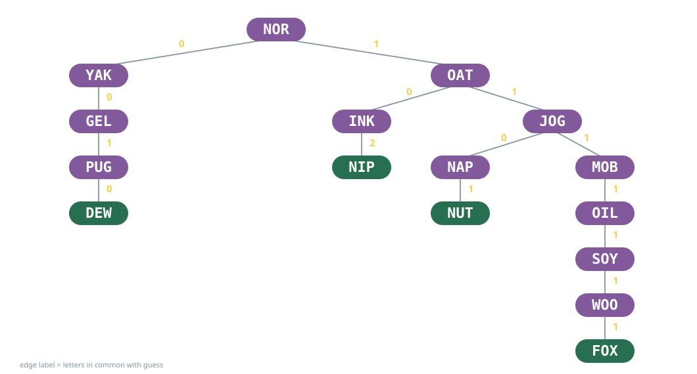
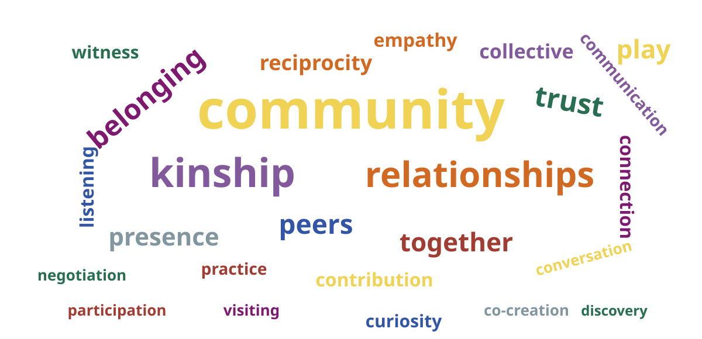
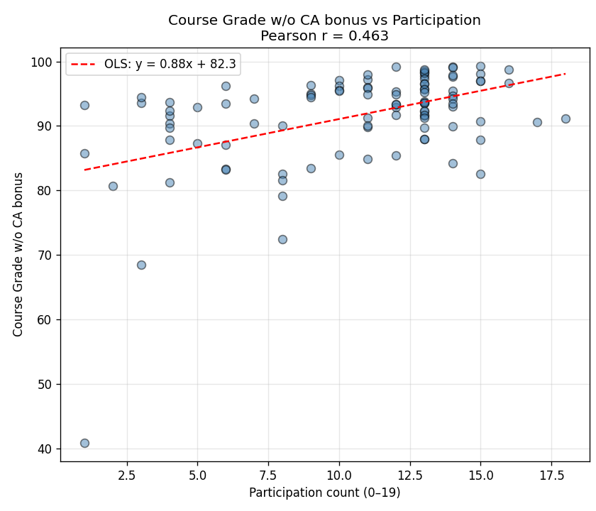

Everything I Know About Teaching I Learned at Puzzled Pint
WCCCE 2026
Let’s Play a Game…
Jotto
MOB YAK GEL NIP OAT PUG FOX NOR WOO INK SOY JOG NUT DEW NAP OIL
Pick one. Make sure everyone knows and agrees.
My Jotto Algorithm

How I want to teach…

How they believe they learn…

Part A: Course Design
Course Design
learning activities + assessments
A Puzzle

The Goal
Design learning activities that provide something a private tutor cannot.

The Lesson of Puzzled Pint

Learning in Community
Collective intelligence allows groups to outperform individuals on many tasks. (Woolley et al., 2010, Science)
Learning emerges through participation in communities of practice. (Lave & Wenger, 1991)
Cognitive division of labor in groups reduces individual load and supports flexible thinking. (Wegner, 1987)
A Few Examples
| # | Story | Concept |
|---|---|---|
| 1 | Candy Hearts Factory | stacks |
| 2 | Donkey and Dragon | BFS |
| 3 | Muddy City | MST |
| 4 | Sages & Tricksters | logic |
| 5 | Billboard Hot 100 | ordered data |
| 6 | The Great Data Heist | dictionaries |
| 7 | Graph Isomorphism Detective | graph theory |
| 8 | Birthdays | hashing |
| 9 | Jotto | decision trees |
| 10 | Genome Assembly | Euler paths |
| 11 | Voronoi Seurat | BFS |
| 12 | Mary Had a Little Lamb | Markov chains |
| 13 | Literary Social Networks | NLP + graphs |
| 14 | Slippery Puzzle | planar graphs |
| 15 | Campus Walks ★ | graphs |
| 16 | Bird Staging ★ | divide & conquer |
| 17 | Musical Influence Explorer ★ | BFS/DFS/SCC |
| 18 | Game of Life ★ | cellular automata |
| 19 | Pokémon Explorer ★ | data frames |
| 20 | Genomic Interval Explorer ★ | interval trees |
★ = independent project I’ve prepared 20 talks. Pick two.
Example 1: Candy Hearts
Example 1: Candy Hearts
Example 1: Candy Hearts
Candy Hearts Recap
- Thanks to “Advent of Code” for the problem idea.
- Candy Factory Story was just the problem spec.
- Students read aloud without my prompting!!
- Wellness messaging is a theme.
Example 14: A Slippery Puzzle
Find a rule that applies to everyone’s set of numbers.
Example 14: A Slippery Puzzle
B:
C:
How do the numbers relate to the graph on the flip side?
Example 14: A Slippery Puzzle
In any connected planar graph,
\[V - E + F = 2\]
where V is the number of vertices, E the number of edges, and F the number of faces.
Slippery Puzzle Recap
- Proof by induction follows.
- Students need to interact.
- Originally designed as an ice-breaker.
- Why is it called “Slippery Puzzle?”
Unifying Features
Acknowledge the canonical treatment — give them the starting place for independent study
Situate in an authentic, motivating context — find something delightful
Design for active knowledge construction — don’t tell them anything, let them speculate
Make structure perceptible — illuminate a metaphor, or make things sensory
Culminate in authentic production — nurture their ability to build things
Does it work?
Curiosity enhances memory encoding. (Gruber et al., 2014, Neuron)
Teacher enthusiasm is associated with increased student engagement and enjoyment. (Frenzel et al.)
Metaphors support understanding by mapping structure between domains. (Gentner, 1983)
Authentic, real-world tasks often increase student motivation. (PBL meta-analyses, 2024)
What’s the fatal flaw?

Part B: Attendance
I Was Missing

Why Don’t They Come?
Physical barriers — commutes or jobs.
Overconfidence — they believe they can catch up.
Present bias — immediate vs. delayed gratification. A volleyball game with friends is more appealing in the moment, and the cost of missing class is invisible.
No kinship — they don’t feel the community needs them, or that they belong.
I Caved

But I am haunted by:
External rewards erode intrinsic motivation (Deci & Ryan, 2000)
Some Half-Baked Ideas…
Structural design — presence as a epistemological necessity in learning activities
Making the hidden cost visible — make sure community values are transparent
Social accountability — create subgroups who expect to see them
Pre-commitment — on day 1 students declare why being in the room matters, refer to it often
Attendance Chart — Christine Goedhart’s daily reflection and physical evidence
Recording is a given — equity and accessibility
Research Supporting the Ideas
External rewards erode intrinsic motivation (Deci & Ryan, 2000)
Written intentions outperform held beliefs (Gollwitzer, 1999)
Belonging is the strongest predictor of persistence (Walton & Cohen, 2011)
Kinship: relational accountability sustains presence (Wilson, 2008; Brayboy, 2005)
Present bias: immediate costs outweigh deferred value (O’Donoghue & Rabin, 1999)
Table Talk for Innovation
- What’s missing from these ideas?
- What’s working for you? What gets students to show up, and stay engaged?
- What have you tried that didn’t work?
- What are your ideas for innovation?

Reflections and Ruminations
Everything I know about teaching,
I learn at Puzzled Pint,
and the puzzles are never the point.
Questions?
References
Barsalou, L. W. (2008). Grounded cognition. Annual Review of Psychology, 59, 617–645.
Brayboy, B. M. J. (2005). Toward a Tribal Critical Race Theory in education. The Urban Review, 37(5), 425–446.
Corbett, J. Computational Indigenuity: Indigenous Computing Frameworks. WCCCE.
Deci, E. L., & Ryan, R. M. (2000). The “what” and “why” of goal pursuits: Human needs and the self-determination of behavior. Psychological Inquiry, 11(4), 227–268.
Frenzel, A. C., Daniels, L., & Burić, I. (2021). Teacher emotions in the classroom and their implications for students. Educational Psychologist, 56(4), 250–264.
Gentner, D. (1983). Structure-mapping: A theoretical framework for analogy. Cognitive Science, 7(2), 155–170.
Gollwitzer, P. M. (1999). Implementation intentions: Strong effects of simple plans. American Psychologist, 54(7), 493–503.
Gruber, M. J., Gelman, B. D., & Ranganath, C. (2014). States of curiosity modulate hippocampus-dependent learning via the dopaminergic circuit. Neuron, 84(2), 486–496.
Lave, J., & Wenger, E. (1991). Situated Learning: Legitimate Peripheral Participation. Cambridge University Press.
Loewenstein, G. (1994). The psychology of curiosity: A review and reinterpretation. Psychological Bulletin, 116(1), 75–98.
O’Donoghue, T., & Rabin, M. (1999). Doing it now or later. American Economic Review, 89(1), 103–124.
Rosenthal, A. (2023). The joyful, perplexing world of puzzle hunts [TED Talk]. TED Conferences.
Walton, G. M., & Cohen, G. L. (2011). A brief social-belonging intervention improves academic and health outcomes of minority students. Science, 331(6023), 1447–1451.
Wegner, D. M. (1987). Transactive memory: A contemporary analysis of the group mind. In B. Mullen & G. R. Goethals (Eds.), Theories of Group Behavior (pp. 185–208). Springer.
Wilson, S. (2008). Research is Ceremony: Indigenous Research Methods. Fernwood Publishing.
Woolley, A. W., Chabris, C. F., Pentland, A., Hashmi, N., & Malone, T. W. (2010). Evidence for a collective intelligence factor in the performance of human groups. Science, 330(6004), 686–688.